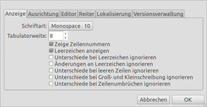

diffuse
Dieser Artikel wurde für die folgenden Ubuntu-Versionen getestet:
Ubuntu 14.04 Trusty Tahr
Zum Verständnis dieses Artikels sind folgende Seiten hilfreich:
Diffuse  ist ein in Python geschriebenes Programm zum Vergleichen und Zusammenführen von Textdateien (vornehmlich Quellcode). Es wurde unter der GNU GPLv2 veröffentlicht und ist auch für Windows und Mac OS X erhältlich. Diffuse kann eine beliebige Anzahl von Dateien vergleichen und gibt dem Benutzer die Möglichkeit, die Dateien manuell zu bearbeiten. Diffuse unterstützt das Einfügen von Dateien durch "Drag'n'Drop" und zudem eine Vielzahl von Versionsverwaltungen:
ist ein in Python geschriebenes Programm zum Vergleichen und Zusammenführen von Textdateien (vornehmlich Quellcode). Es wurde unter der GNU GPLv2 veröffentlicht und ist auch für Windows und Mac OS X erhältlich. Diffuse kann eine beliebige Anzahl von Dateien vergleichen und gibt dem Benutzer die Möglichkeit, die Dateien manuell zu bearbeiten. Diffuse unterstützt das Einfügen von Dateien durch "Drag'n'Drop" und zudem eine Vielzahl von Versionsverwaltungen:
Außerdem wird die Syntax für mehr als 20 Programmiersprachen hervorgehoben.
Installation¶
Um mit Diffuse arbeiten zu können, muss folgendes Paket installiert [1] werden:
diffuse (universe)
 mit apturl
mit apturl
Paketliste zum Kopieren:
sudo apt-get install diffuse
sudo aptitude install diffuse
Fremdpaket¶
Die aktuellste Programmversion – abhängig von der eingesetzten Ubuntu-Version – kann als Fremdpaket  heruntergeladen und manuell installiert [2] werden.
heruntergeladen und manuell installiert [2] werden.
Hinweis!
Fremdpakete können das System gefährden.
Benutzung¶
Grafisch¶
Der Aufbau des Programm gliedert sich in 6 Teile. Oben, unter der Menüleiste, befindet sich die globale Werkzeugleiste. Von links nach rechts:
Zwei Schaltflächen zum Öffnen eines neuen Tabs zum Vergleichen von 2 oder 3 Dateien
Schaltfläche zum neu ausrichten
Vier Tasten zum Navigieren zwischen den Unterschieden im Dokument
Diverse Schaltflächen zum Zusammenführen
Schalttasten für Rückgängig oder Wiederholen von Änderungen
Ausschneiden, Kopieren, Einfügen
Schaltfläche zum Rücksetzen aller Änderungen
Unter der globalen Werkzeugleiste befindet sich, falls nötig, eine Leiste mit Reitern (Tabs) der geöffneten Vergleiche. Unter dieser befinden sich die lokalen Werkzeugleisten eines Dokumentes mit Schaltflächen zum Öffnen, Speichern und Laden, sowie dem absoluten Pfad der Datei.
Darunter befindet sich der wichtigste Teil, das Textfeld, welches neben Zeilennummern und Steuerzeichen noch eine komfortable Navigationsleiste an der rechten Seite bietet. In dieser werden je nach Änderungsart rote oder grüne Bereiche gezeichnet, so dass eine schnelle Navigation gewährleistet ist.
Unter dem Textfeld befinden sich die lokalen Statusleisten, welche aktuelle Zeilennummer, den markierten Bereich, sowie Zeichenkodierung und Art des Zeilenumbruchs anzeigen.
Hierunter befindet sich die globale Statusleiste, in der Tipps und weitere Informationen angezeigt werden.
Markierungsmodi¶
Diffuse hat zwei Modi zum Markieren von Text. Mit dem Standardmodi kann man zeilenweise Textblöcke markieren, um diese dann über die einzelnen Optionen im Kontextmenü oder der Werkzeugleiste mit den entsprechenden Änderungen in den anderen Dokumenten zusammenzuführen oder von diesen zu isolieren.
Der zweite Modus kann über das Doppelklicken mit der linken Maustaste oder ⏎ aktiviert werden. In diesem ist es möglich, Text zeichenweise zu markieren und den Text ganz normal wie in jedem Texteditor zu bearbeiten. Um wieder in den ersten Modi zu gelangen, genügt das Drücken der Esc-Taste.

Einstellungen¶
Über "Bearbeiten → Einstellungen" stehen vielfältige Möglichkeiten zur Anpassung an die eigenen Bedürfnisse zur Verfügung. Die nebenstehende Abbildung zeigt beispielhaft einige dieser Optionen.
Kommandozeile¶
Es ist möglich, Diffuse beim Start in einem Terminal-Fenster [3] oder auf der Konsole einige Parameter zu übergeben. Im Folgenden wird näher darauf eingegangen.
Hinweis:
Öffnet man Diffuse mit nur einer Datei, so wird die linke Spalte frei gelassen. Bei mehr als zwei Dateien werden dementsprechend zwei Ansichten geöffnet. Für derlei Ansichten gibt es keine Beschränkungen seitens des Programms. Es ist möglich, 20 Dateien und mehr zu vergleichen. Die Ansichten werden dann jedoch (je nach Fenstergröße) sehr schmal.
Möchte man einen Satz von drei Dateien öffnen, so kann man dies über folgenden Befehl tun:
diffuse DATEI1 DATEI2 DATEI3
Um lokale Änderungen oder Konflikte beim Zusammenführen zu überprüfen, verwendet man den Befehl:
diffuse -m
Zum Vergleichen spezifischer Revisionen verwendet man:
diffuse -r REVISION1 -r REVISION2 DATEI
Eine Revision überprüft man mit folgendem Befehl:
diffuse -c rev
Problembehebung¶
 - Handbuch
- Handbuch Programmübersicht
Programmübersicht- Erstellt mit Inyoka
-
 2004 – 2017 ubuntuusers.de • Einige Rechte vorbehalten
2004 – 2017 ubuntuusers.de • Einige Rechte vorbehalten
Lizenz • Kontakt • Datenschutz • Impressum • Serverstatus -
Serverhousing gespendet von